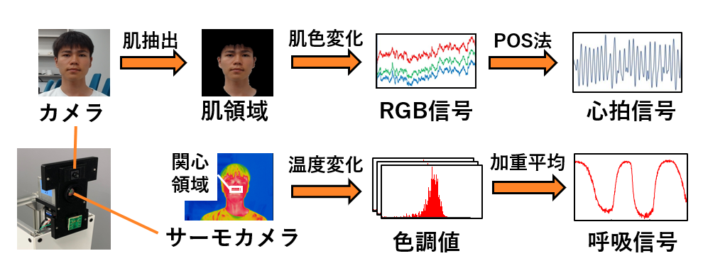
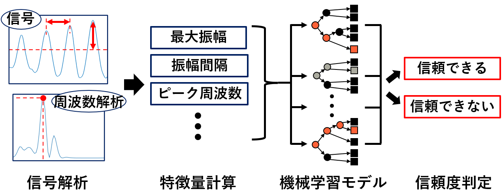
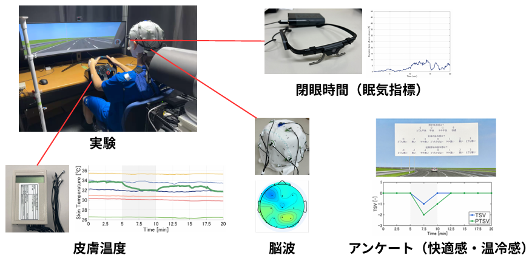
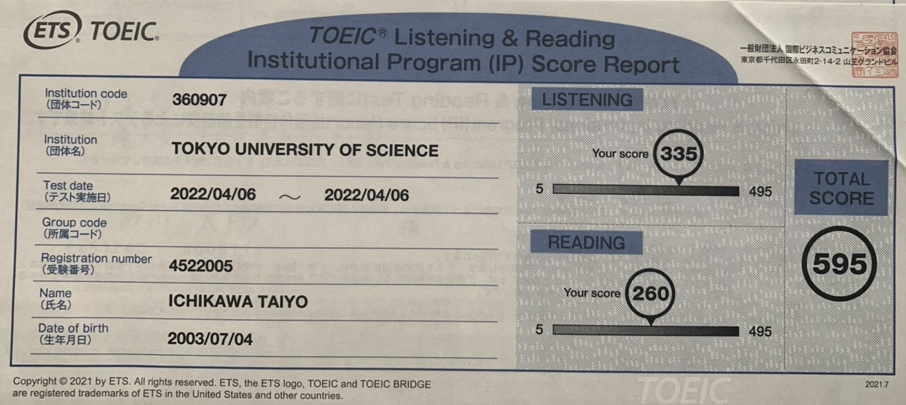
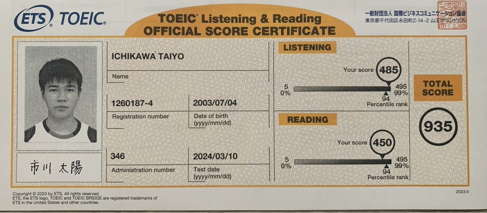
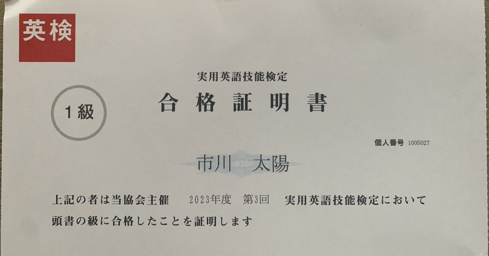
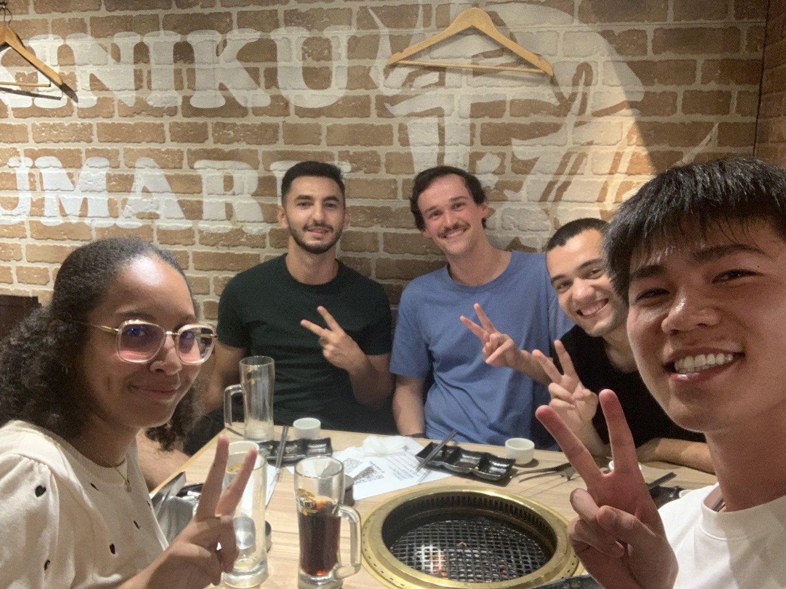
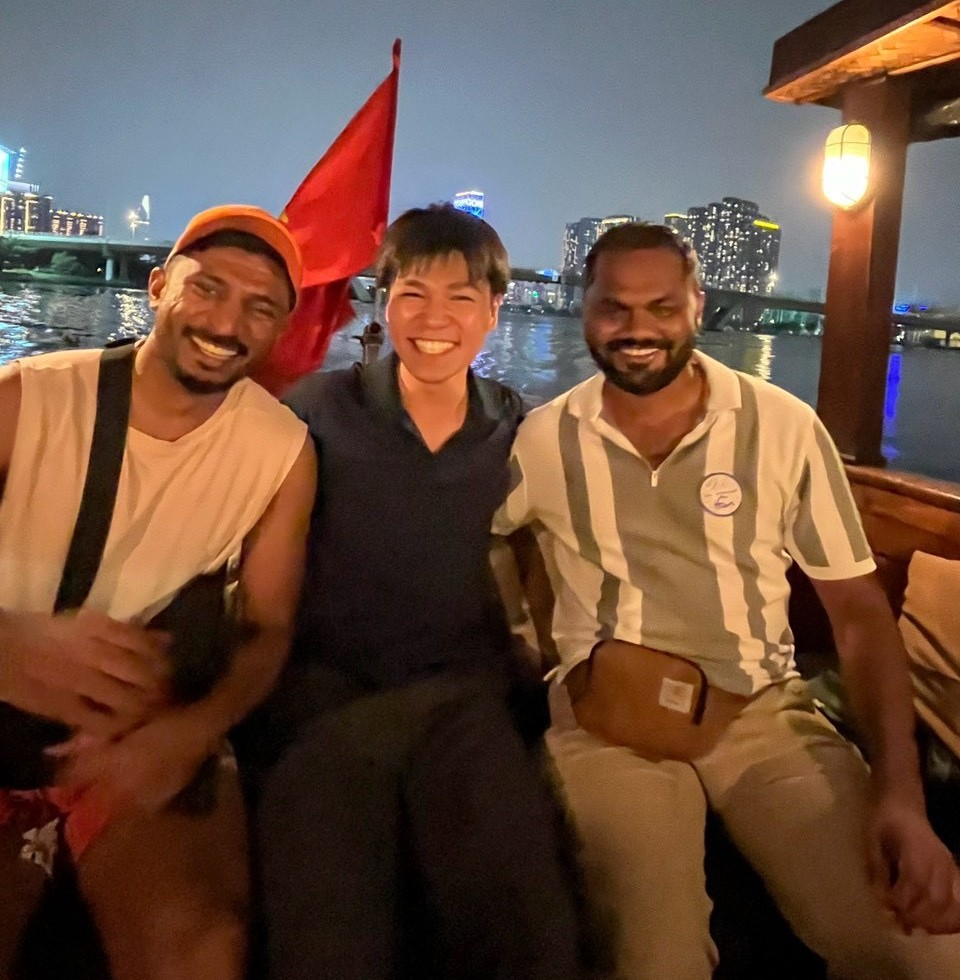

学部研究｜カメラから計測した呼吸と心拍の信頼度を判定する
医療現場の負担や感染リスクの軽減を目指し、カメラを用いて心拍を、サーモカメラを用いて呼吸を計測する技術を開発した。心拍は肌色の変化から、呼吸は鼻周辺の温度変化から計測した。こうした計測は、体の動きや環境ノイズなどの影響で精度が低下することがある。そこで、機械学習を活用し、計測した信号が信頼できるかどうかを自動で判定するシステムを構築した。


Mechanical Engineering · Human Engineering
医療現場の負担や感染リスクの軽減を目指し、カメラを用いて心拍を、サーモカメラを用いて呼吸を計測する技術を開発した。心拍は肌色の変化から、呼吸は鼻周辺の温度変化から計測した。こうした計測は、体の動きや環境ノイズなどの影響で精度が低下することがある。そこで、機械学習を活用し、計測した信号が信頼できるかどうかを自動で判定するシステムを構築した。


ドライバーの快適さを保ちながら眠気を抑える運転環境の実現を目指し、首元に風を当てたときの快適さと眠気への効果を検証している。車内の温度を下げることで眠気を抑える方法が検討されてきたが、エネルギー消費が大きいという課題がある。そこで、首元に風を当てる方法に着目し、実験を通じて快適さと眠気の予防を両立できることが確認された。今後は、自律神経系の反応を測定し、覚醒効果との関係を検証する。

運転シミュレーター・生体指標・主観評価による実験
気流刺激に対する身体部位の感受特性に基づく ドライバの覚醒維持方策
発表日：2026年10月14日
大学入学直後に受験

平日3時間・休日8時間の学習を2年間継続し、達成


留学生の学習支援や国際交流に取り組む団体に所属

ベトナムで約3週間のインターンシップに参加
